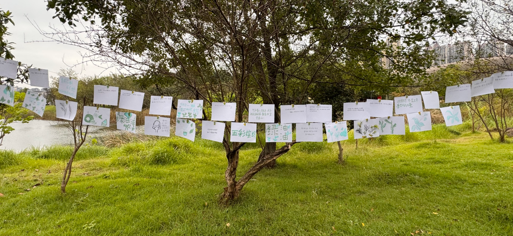
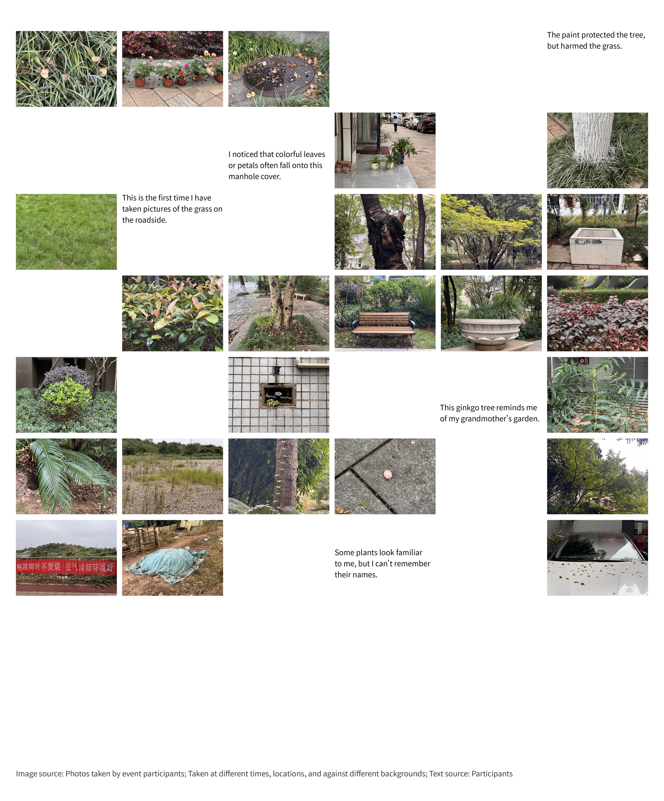
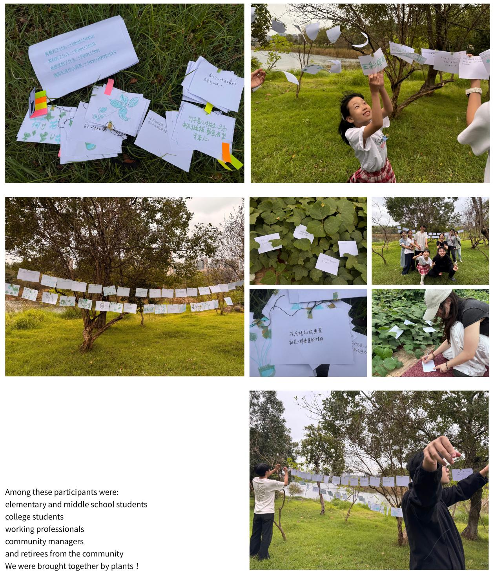

Community-based environmental learning · Participatory art
Everyday Counterpoint
A Community-Based Environmental Noticing Project

What I notice. What I think.
What I feel. How I relate.
This community-based environmental learning and artistic practice project invites people to pause in their daily routines, engage in embodied sensory encounters with ordinary plants, and explore connections between people, nature, and place.
Bringing together people across generations and backgrounds—including elementary and middle school students, undergraduates, practitioners, community managers, and retired residents—the project encourages participants to engage with community plants through observation, touch, sketching, and writing.
Participants record not only plant forms but also the memories, emotions, and associations these encounters bring forth. Their drawings and reflections return to the places where the plants grow for a public exhibition, opening personal observations to a community dialogue across generations.
The architecture of attention
Ordinary plants in community corners and pavement cracks become starting points for renewed attention to our surroundings and our relationships with them.
Embodied encounters
Sensory engagement brings different generations and life experiences into conversation, turning individual observation into public dialogue.
Grounding the everyday
Pausing, bending down, or squatting brings the body closer to the land and to plants that are easily overlooked in daily haste.
Phase 1
Noticing the overlooked
Participants pause to notice and appreciate plants that often go overlooked in everyday life.

Phase 2
Engaging through the senses
Participants move beyond visual observation through touch, close encounters, and embracing plants.
Phase 3
Making meaning together
Through drawing, writing, and conversation, participants reflect on their experiences and share the thoughts, feelings, memories, and relationships that emerge.
